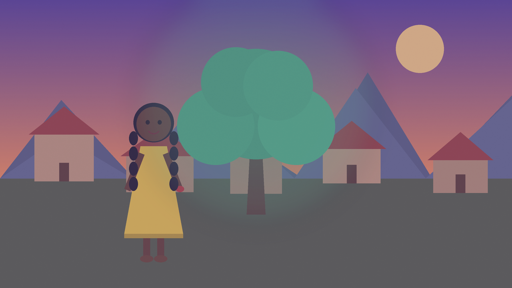

Just tell a story out loud. NarraFlow listens, understands who and where and what happens, and paints each scene as you go. Ask it to change anything, by voice, and watch the pictures follow.
Voice is powered by AssemblyAI's Voice Agent API and needs a microphone and a secure (https) connection. The demo replays a short original story with no microphone and no sign-in.

A conversation with a co-storyteller, not a record button.
Talk naturally, with pauses and false starts. “Once upon a time, Amara lived under the mountains…” NarraFlow waits while you think.
Characters, places and scenes are understood as you speak. Every scene is illustrated, and each character keeps the same look throughout.
“Make the tree blue.” “Change her dress to green.” “Regenerate scene two.” Then say “play the story” to watch it with narration and captions.
The voice agent doesn't just talk. It acts on a structured story through tool calls.
Anyone who tells stories better than they draw them.